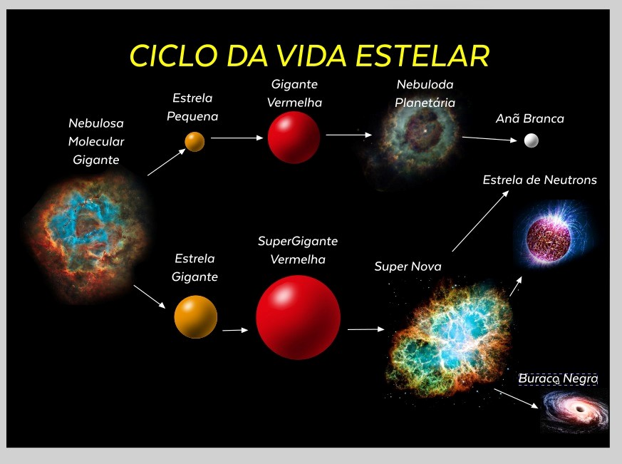

CICLO DE VIDA ESTELAR
Diagrama HR também mapeia estrelas em estágios mais avançados de suas vidas, como as gigantes e supergigantes vermelhas. Essas estrelas, que já esgotaram o hidrogênio em seus núcleos e estão fundindo elementos mais pesados, aparecem na parte superior direita do diagrama. As gigantes vermelhas, como Betelgeuse, têm temperaturas relativamente baixas, mas são extremamente luminosas devido ao seu grande tamanho. As supergigantes, ainda mais luminosas, incluem algumas das estrelas mais massivas conhecidas e estão entre os objetos mais brilhantes no céu noturno (Russell, 2019).
As anãs brancas, que são os restos compactos de estrelas que passaram por estágios de gigante ou supergigante, estão localizadas no canto inferior esquerdo do Diagrama HR. Essas estrelas são muito pequenas, com massas comparáveis às do Sol, mas com volumes semelhantes aos da Terra, resultando em uma densidade extremamente alta. As anãs brancas têm temperaturas elevadas inicialmente, mas como não estão mais realizando fusão nuclear, elas esfriam gradualmente ao longo de bilhões de anos, movendo-se para a direita no diagrama enquanto perdem luminosidade (Hertzsprung, 2020).

Existem também tipos de estrelas menos comuns, como as anãs marrons, que são encontradas abaixo da sequência principal, na parte inferior direita do Diagrama HR. As anãs marrons não têm massa suficiente para iniciar a fusão de hidrogênio em seus núcleos e, portanto, são muito frias e pouco luminosas. Elas representam um estágio intermediário entre planetas gigantes gasosos e estrelas, e seu estudo ajuda a compreender os limites da formação estelar e planetária (Russell, 2019).
As estrelas variáveis, como as Cefeidas e as variáveis RR Lyrae, têm posições no Diagrama HR que mudam ao longo do tempo devido às variações periódicas em sua luminosidade e temperatura. As Cefeidas, por exemplo, são estrelas que pulsam em brilho de maneira regular, e suas posições no diagrama oscilam entre diferentes pontos, o que as torna importantes para medir distâncias astronômicas. Estas estrelas são encontradas em uma faixa instável do Diagrama HR conhecida como faixa de instabilidade, que atravessa a sequência principal e a região das gigantes (Hertzsprung, 2020).
Os buracos negros e as estrelas de nêutrons, embora não sejam representados diretamente no Diagrama HR, estão associados ao fim da vida de estrelas massivas. Quando uma estrela supergigante explode em uma supernova, ela pode deixar para trás um buraco negro ou uma estrela de nêutrons, dependendo da massa remanescente. Embora não apareçam no diagrama devido à sua baixa ou nula luminosidade, a presença desses objetos pode ser inferida a partir do comportamento das estrelas ao seu redor e das emissões de raios-X (Russell, 2019).